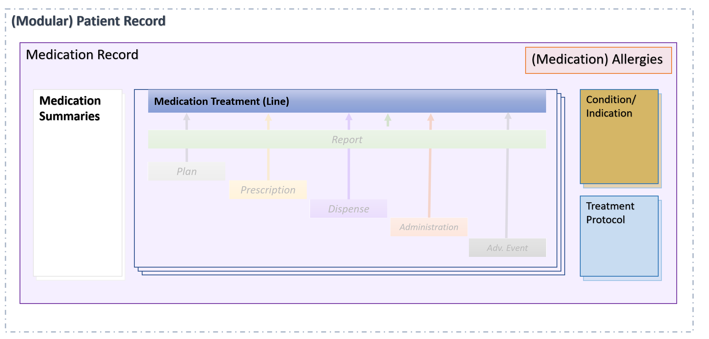

MedicationRecord
0.1.0-test - CI Build
MedicationRecord
0.1.0-test - CI Build
MedicationRecord - Local Development build (v0.1.0-test). See the Directory of published versions
The Medication Record needs to contain several data objects that are in the Modular Reccord (and therefore may be standardized separately).
A brief walkthrough of the data objects that are part of the Medication Record:

For meeting the structure above, the medication record shall contain some metadata (data about the record itself),
and, depending on the type of record, will contain structured medication data that is relevant about the medication, such as:
This data will be structured according to the different scenarios. The Medication Record specification defines a superset of the information that can be in the different types of record.
IG © 2021+ HL7 Belgium. Package hl7.fhir.be.riziv-medicationrecord#0.1.0-test based on FHIR 4.0.1. Generated 2021-08-18
Links: Table of Contents |
QA Report
Version History |
 |
|